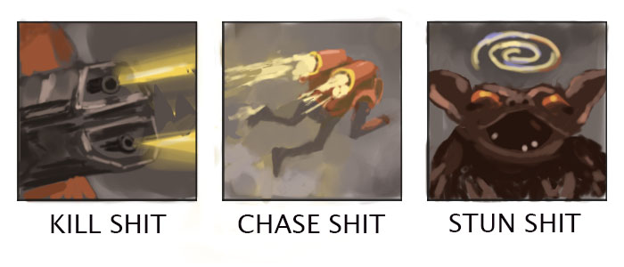
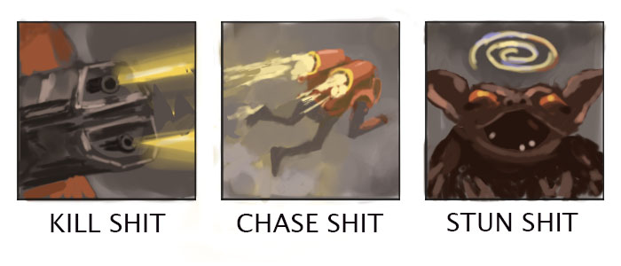

We figured out a method to overcome ladder anxiety once and for all
A couple of years ago we were playing a game of StarCraft and lost to a strategy we frequently lose to. We got so upset that we dug into our keyboard and actually ripped out one of the keys.
This kind of shocked us. We had to take a moment and reassess our priorities. It wasn't like we were making any money off the game. Was this not a video game designed to illicit joy? We certainly weren't treating it that way at the time. We weren't feeling the joy.
Meet B.O.B., the human worker unit.
I survived an explosion and am just happy to be here—can't you tell by my non-creepy smile?
We set out to unpack what games meant to us and how we could enjoy them, even if we lose a bunch. We had to come to terms with the fact that there are many better players out there, and we weren't some uber-gifted prodigy that was going to best everyone without putting in 6-8 hours every day, for years, into a single game—something we simply weren't going to do.
Over time, we've come up with an informal list of things to keep in mind while playing any game, but especially a competitive 1v1 game like Stormgate.
1. Talk to yourself while you play; narrate the game
Talking out loud and making light of the game is a great way to take the edge off of a seemingly serious and intense experience. At the end of the day, it really is "just a game". I know that the more relaxed I am, the better I perform. So while it may feel like I'm not taking the game seriously enough by talking and being a little silly while I play, it actually calms me down and helps me to play better.
Lancer
Grab a lance and take a stance :>
2. Have a plan of action before the game starts
I find I'm much more successful in a game when I have an actual plan. As in, I have a build, know what units I'm going to make, if I'm going to play aggressively or defensively, etc. Starting a mechanically-demanding RTS game without having a clue as to how I'm going to go about it is daunting, stressful, and not very fun.
An RTS can be like cruising down the highway as a new driver: there are signs, exits, cars changing lanes and cutting you off, people flipping you the bird—it can hard to stay focused and get to where you need to go safely. Knowing what I want to do in the game, however simple, can provide some direction in an otherwise very noisy environment.
3. Play non-standard / off-meta
I like to discover what I find fun about the game and take it all the way. If I lose, it's no big deal because I'm trying different stuff and my primary goal is to enjoy myself. I still play my best and try to win, but winning is usually not the primary focus, and is actually a bit out of focus while I play. I play games to enjoy sweet moments, play fun strategies, [occasionally] try to make bad units work, and express myself through the game.
Personally, we really like to make units that have character and are enjoyable to control. It could be how they move, how they attack, how difficult they are for our opponent to deal with—it could be any number of reasons but, in every game we play, we find the units/hero that speak to us and focus on improving with that subset.
Medtech
Don't worry, we can fix this.
4. Type “gg wp!” before leaving the game, no matter what
Congratulating your opponent on the win, no matter how they won the game, is a great way to exit. The “!” is especially important because it means we're not taking all of this too seriously. Get cheesed and killed off in the first 5 minutes? “gg wp!” Lose a long, drawn out macro game? “gg wp!"" Your opponent trash talks you for 10 minutes straight? “gg wp!”
We struggle saying "gl hf" at the start of the game sometimes, or simply forget about it, but the “gg wp!” is a solid one. The habit will pay off.
Hedgehog
FHUW-FHUW-FHUW-FHUW.
5. If you royally mess up, it's OK to start a fresh game
Sometimes it's better to cut your losses than to stay in a long game and slowly bleed out. Often times when we play too greedy, we'll lose our expansion and be very far behind our opponent—but we stay in the game to try to eek out a win, only to lose 10-15 minutes later in a longer, drawn out game. These losses can feel worse because I forget I was so far behind early on due to something silly, and actually played quite well after that to get myself back into the game.
I definitely don't like to leave early all the time, because then I'm just cheating myself out of learning how to come back and play a longer game. But it's good to do it sometimes when it's pretty clear you got owned. Honestly, we stay in games we shouldn't almost every time so this is something we could work on.
Vulcan
A heavy mech unit that deals more damage the longer it stands in one place.
6. Whatever your current skill level, it's OK
Not everyone can be a top tier competitive player. We're certainly not one but we still grind games and do our best. We know that we have a lot of things going on in our life and probably can't compete with people half our age. And even if we were younger and had more free time, it doesn't automatically mean we would be a great player. It doesn't make us bad, but it could mean we excel at different things.
For example, we know we're a more mechanical and intuitive player and not as much of a smart, strategical player. We don't like to optimize build orders, read tooltips, or study other people's play. We just like to get in a game and figure things out for ourselves, run around the map with our favorite units, and try for some cool moments. We have known for a long time—through our many years of playing StarCraft, Warcraft 3, DotA, and Heroes of the Storm—which aspects of the game we are good at. And while our skillset isn't the best for winning all the time, it doesn't matter all that much because we choose to lean into what naturally fulfills us in a game—and that's good enough.
 

Beyond being a beautiful unit, the vulcan has 3 core strengths...
7. Play at your optimal times of day
It wasn't a brain buster to learn that I could be a monster on two cups of coffee and a confused barn owl at 4 in the afternoon. To give myself the best chance of enjoying the game, I try not to play when I'm tired, sick, upset, etc. Sounds self-explanatory but I can't tell you how many games I've queued up on super low energy and gone 0-7. It's just not worth it. Play at your best times, even if it means playing a bit less.
8. Take a break if you lose 3 in a row
An ex-StarCraft pro gamer shared that when he takes to the ladder to practice his builds, he will log off if he loses 3 in a row to avoid awful loss streaks.
It turns out that a negative mentality feeds on itself and we can all avoid a lot of anguish and downward-spiraling if we take a break when we're having a rough go of it. In our time off we can think about the game, plan a new strategy, or push it out of our mind entirely and come back fresh.
Atlas - pilot mode
Vehicle weapons test 7.3.61
9. Losing doesn't mean you're a loser, it means you're learning
People sometimes conflate losing with being a loser, which is rough.
I know that I'm learning a lot when I lose. Losing a lot means I have more learning to do or perhaps I'm being a little stubborn.
Not that we have much experience, but winning a lot is less fulfilling than it's made out to be. It's not as challenging. When we go on win streaks, we sometimes get a false sense of accomplishment. When our ego finally does get shattered, it's extra painful because we're not used to it. We thought we were so good that losing didn't belong to us.
Atlas - deployed mode
Vehicle weapons test 7.4.61
It's great to embrace the losses and feel good about them. We're gathering intelligence that can be applied to the future—and when those wins come in, they taste extra good.